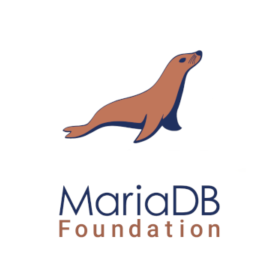
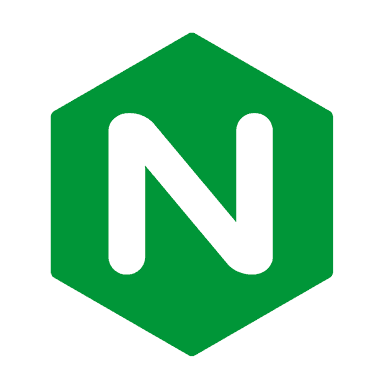

phpMyAdmin

phpMyAdmin is a free and open source administration tool for MySQL and MariaDB. As a portable web application written primarily in PHP, it has become one of the most popular
MySQL administration tools, especially for web hosting services.
WordPress
WordPress is a free and open-source content management system written in PHP and paired with a MySQL or MariaDB database. Features include a plugin architecture and a template
system, referred to within WordPress as Themes.
MariaDB

MariaDB is a community-developed, commercially supported fork of the MySQL relational database management system, intended to remain free and open-source software under the GNU
General Public License.
Nginx

Nginx is a web server which can also be used as a reverse proxy, load balancer, mail proxy and HTTP cache. The software was created by Igor Sysoev and first publicly released
in 2004. A company of the same name was founded in 2011 to provide support and Nginx plus paid software.